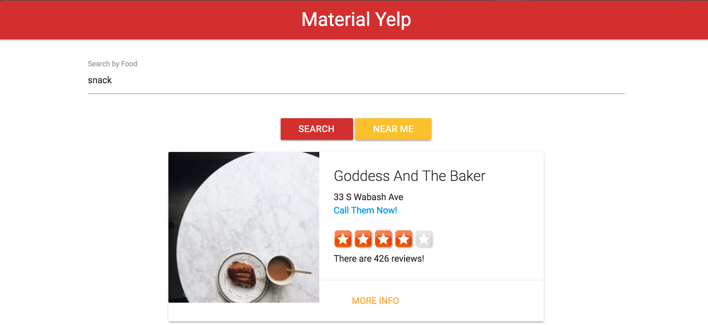
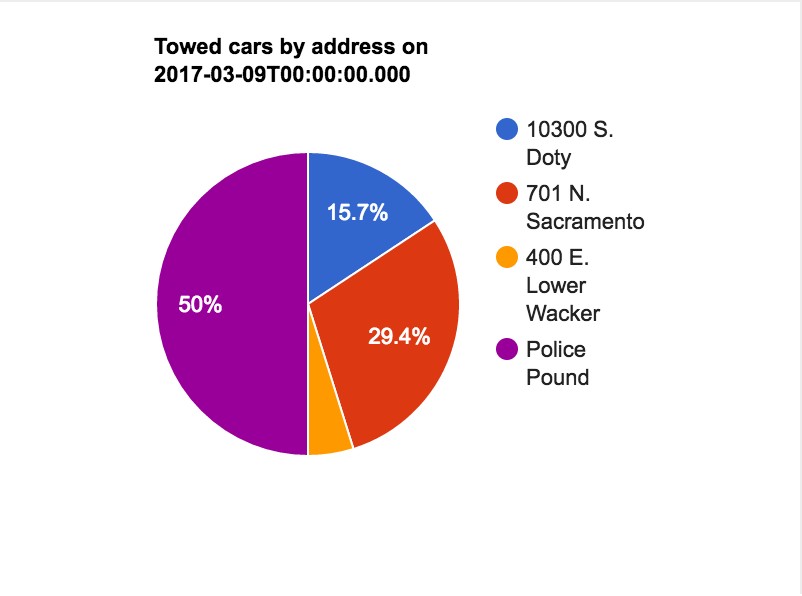
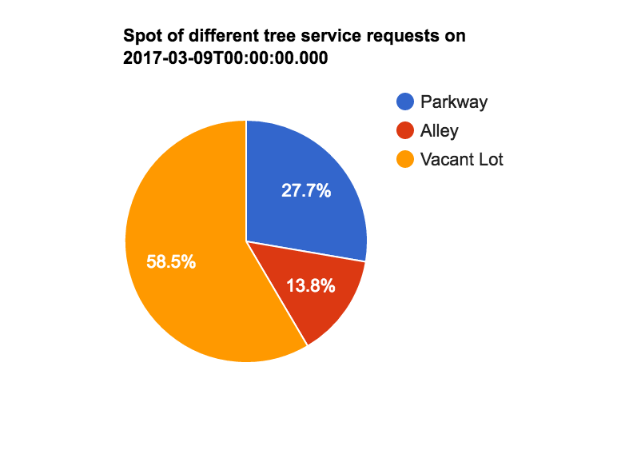
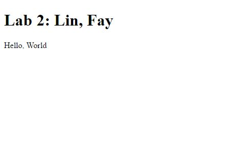
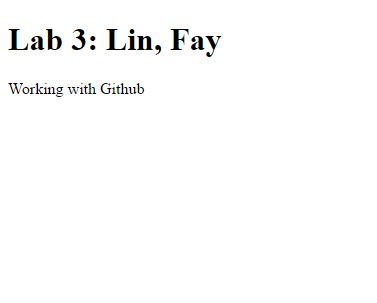
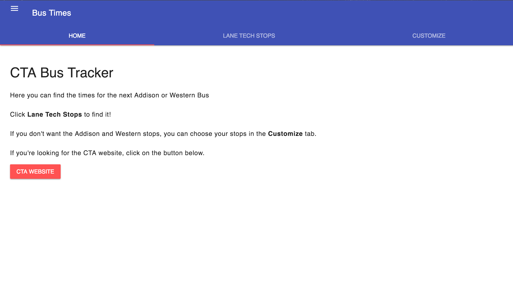

Bus Tracker App
An app that predicts the times for the next bus at the Western and Addison stops in Chicago.

Yelp API App
A Yelp app that get the reviews for different resturants without the need to get an account.

Towed Vehicle Pie Chart
A site where you can find the percent of towed cars in each lot in Chicago.

Tree Debris Removal Request Pie Chart
A site that displays a chart of all the tree debris removal requests and their different locations.

Lab 2
Practicing pushing to Github. This was the product. It's not that interesting. First project in the new workspace.

Lab 3
Another project practicing pushing to Github. Still not very interesting. More text has been added.

Updated Bus Tracker
A better design to the Bus Tracker, but also has a customization feature. Spent ~2-3 weeks on it. It still has the same Lane Tech stops, just seperated from the custom stops.